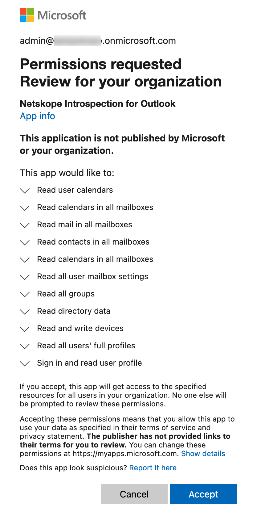

Configure Microsoft Office 365 Outlook for API Data Protection
To use API Data Protection with Microsoft Office 365 Outlook, first you need to connect Netskope to your Microsoft Office 365 Outlook app with APIs. Netskope can scan your Outlook.com account for emails with attachment and body. In addition, Netskope can run DLP on emails. The following sections explain how the API connectors work and how to configure the connection.
Configure Netskope to Access your Office 365 Outlook App
To authorize Netskope to access your Office 365 Outlook account, follow the steps below:
Log in to the Netskope tenant UI:
https://<tenant hostname>.goskope.comand go to Settings > API-enabled Protection > SaaS.Select the Microsoft Office 365 Outlook.com icon, and then click Setup Instance.
The Setup Instances window opens. Enter the following details:
For instance name, enter the domain name of the Microsoft Office 365 account.
Note
To find the domain name of your Microsoft Office 365 account, log in to your Microsoft 365 admin center and then navigate to Microsoft 365 admin center > Home > Settings > Domains. If your fully qualified domain name (FQDN) is my-domain.onmicrosoft.com, then specify my-domain as the domain name in the instance name field.
For instance type, select the following check box:
API Data Protection: Select this option to allow Netskope to scan through your SaaS app instance to list files, user, and other enterprise data.
Security Posture: This option allows Netskope to continuously scan through your SaaS app to identify and remediate risky SaaS app misconfigurations and align security posture with best practices and compliance standards. This is a read-only checkbox. To enable security posture for Outlook, configure the Microsoft 365 app under Settings > API-enabled Protection > SaaS.
Note
This feature is part of the Netskope SaaS Security Posture Management solution. For additional configuration requirement, read Netskope SaaS Security Posture Management.
Enter your Office 365 global administrator email address.
Note
If the service account is expiring or there is a change in the admin role email address, you can edit this email address after setting up the app instance.
Enter a list of internal domains. Important points to note:
Note
Verified domains (in Office 365 tenants, their statuses are displayed as “healthy” and “possible service issues”) provisioned in the Office 365 tenant need not be added to the internal domain list. These domains will be automatically treated as internal by API Data Protection. However, the following domains can be added during the grant time if they need to be treated as internal by API Data Protection:
domains that are unverified (status displayed as “incomplete setup”) in the Office 365 tenant.
domains that are not provisioned in the Office 365 tenant.
A sample example of Office 365 domains is as follows:
Log in to your Microsoft Office 365 Admin Center, then navigate to Settings > Domains.

Ensure that you add the internal domains at grant time. Adding internal domains post-grant will require a re-grant, and will not mark the existing external users and files as internal even if the users and files are part of the internal domain.
For internal domains, wildcard DNS entries are not allowed.
Click Save, then click Grant Access for the app instance you just created.
After clicking Grant Access, you will be prompted to log in with your global administrator username and password, and then Accept the permissions and click Close.
 The Netskope API Data Protection for Microsoft Outlook enterprise app is installed in Azure AD with additional permissions once you grant the Microsoft Office 365 Outlook app. Going forward, the Microsoft Office 365 Outlook app instance will utilize the new Graph API from Microsoft.
Refresh your browser, and you should see a green check icon next to the instance name.
Important
After granting access, make sure you log in to https://login.microsoftonline.com/ from a browser at least once with the email address you added in step 3c. This step is mandatory so that Netskope can make successful API calls with the Microsoft Office 365 account.
Important
Netskope lists and processes policies for the following 'licensed' Outlook users only:
'null' user - A user synchronized from an Active Directory.
'member' user - A user created in Office 365 admin console or Azure portal.
Netskope excludes unlicensed users from user listing and policy processing. Guest users are listed as external users. However, they are excluded from policy processing.